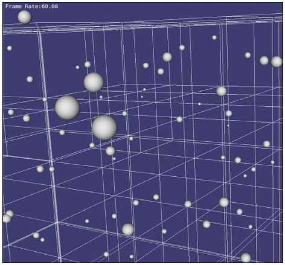

声明: 本文翻译自OpenSceneGraph 3 Cookbook中的Chapter 8某小节, 更多内容请购买该书查看. 以下内容仅供学习之用, 禁止转载. 如有翻译错误之处, 请通过评论告之.
在最后一个章节, 我们花了大量的时间讨论VPB地形模型的结构, 并且已经对四叉树场景图比较熟悉了. 在LOD和paged LOD的帮助下, 我们可以用四叉树算法快速地管理地形板块, 无限制的渲染地形数据. 事实上, 许多其他的应用也在处理海量数据时, 选用四叉树来管理场景, 例如城市建筑, 人群, 网络拓扑等. 一个四叉树的内部节点恰好包含四个子节点, 所以它非常擅长管理XOY平面上的对象.
那么如果我们要分割的是三维空间, 该怎么做呢? 例如, 如果我们有大量的球体随机的分布在三维空间里, 应该使用一种高效的空间索引算法来管理它们呢? 有一种解决方案叫做八叉树. 这是另一种树状结构, 其内部节点(3D区域)恰好有八个子区域, 如下图所示:

VPB使用一个二维的四叉树来组织地形, 类似的我们可以使用三维的八叉树来组织体数据或复杂场景(例如太阳系中的大量行星). 在这个方案中, 我们将使用LOD节点来构造这样一个八叉树结构, 来渲染海量的球体元素. 这些球体将大小不一的随机分布在三维空间里.
实例剖析
- 引入必要的头文件
#include <osg/PolygonMode> #include <osg/ShapeDrawable> #include <osg/Geometry> #include <osg/Geode> #include <osg/LOD> #include <osgDB/ReadFile> #include <osgUtil/PrintVisitor> #include <osgViewer/ViewerEventHandlers> #include <osgViewer/Viewer> #include <iostream> #include <fstream> #include <sstream> - 首先声明一个
OctreeBuilder类, 它将使用八叉树算法来构造一个场景图. 使用setMaxChildNumber()方法设定一个叶子节点中包含多少个geometries(默认为16个). 使用setMaxTreeDepth()方法设定八叉树最大层次数目(默认为32个).class OctreeBuilder { public: OctreeBuilder() : _maxChildNumber(16), _maxTreeDepth(32), _maxLevel(0) {} int getMaxLevel() const { return _maxLevel; } void setMaxChildNumber( int max ) { _maxChildNumber= max; } int getMaxChildNumber() const { return _maxChildNumber; } void setMaxTreeDepth( int max ) { _maxTreeDepth = max; } int getMaxTreeDepth() const { return _maxTreeDepth; } typedef std::pair<std::string, osg::BoundingBox> ElementInfo; osg::Group* build( int depth, const osg::BoundingBox& total, std::vector<ElementInfo>& elements ); protected: osg::LOD* createNewLevel(int level, const osg::Vec3& center, float radius); osg::Node* createElement(const std::string& id, const osg::Vec3& center, float radius ); osg::Geode* createBoxForDebug(const osg::Vec3& max, const osg::Vec3& min); int _maxChildNumber; int _maxTreeDepth; int _maxLevel; }; build()方法将被递归的调用, 来创建八叉树的每一层级. 调用时可以将深度设为0, total指定为包围球, elementes包含巨大场景中的全部元素.osg::Group* OctreeBuilder::build(int depth, const osg::BoundingBox& total, std::vector<ElementInfo>& elements) { ... }- 我们用两个长度为3的数组来计算区域的基本属性.
s[]表示八叉树每一个层次的全部八个元件. 数组中的值只能为0或1, 用此来描述每个元件是在X/Y/Z三个轴的左边还是右边.extentSet[]记录了这个层次区域的最小, 中间, 最大的点坐标, 它后续将用来计算其孩子节点的区域.int s[3]; // axis sides (0 or 1) osg::Vec3 extentSet[3] = { total._min, (total._max + total._min) * 0.5f, total._max }; elements包含了场景中的全部元素, 因此我们可以找出那些在当前区域total中, 并将它们存储在一个临时列表(childData)里. 如果当前区域的元素少到仅能组成一个叶子节点, 将isLeafNode设为true. 否则设为false, 以继续将区域细分为下一个层次的8个子节点.std::vector<ElementInfo> childData; for ( unsigned int i=0; i<elements.size(); ++i ) { const ElementInfo& obj = elements[i]; if ( total.contains(obj.second._min) && total.contains(obj.second._max) ) childData.push_back( obj ); else if ( total.intersects(obj.second) ) { osg::Vec3 center = (obj.second._max + obj.second._min) * 0.5f; if ( total.contains(center) ) childData.push_back( obj ); } } bool isLeafNode = false; if ( (int)childData.size()<=_maxChildNumber || depth>_maxTreeDepth ) isLeafNode = true; osg::ref_ptr<osg::Group> group = new osg::Group; if ( !isLeafNode ) { ... } else { ... }- 如果
isLeafNode为假, 我们将不得不建立包含了八个新的子区域的下一层次区域盒. 这些子区域使用osg::Group创建, 并加到父节点中.build方法将通过不同的区域参数被递归地调用, 用以检查和建立子图.osg::ref_ptr<osg::Group> childNodes[8]; for ( s[0]=0; s[0]<2; ++s[0] ) { for ( s[1]=0; s[1]<2; ++s[1] ) { for ( s[2]=0; s[2]<2; ++s[2] ) { osg::Vec3 min, max; for ( int a=0; a<3; ++a ) { min[a] = (extentSet[s[a] + 0])[a]; max[a] = (extentSet[s[a] + 1])[a]; } int id = s[0] + (2 * s[1]) + (4 * s[2]); childNodes[id] = build(depth+1, osg::BoundingBox(min, max), childData); } } } for ( unsigned int i=0; i<8; ++i ) { if (childNodes[i] && childNodes[i]->getNumChildren()) group->addChild( childNodes[i] ); } - 如果当前节点可作为八叉树中的叶子节点, 我们只要调用
createElement()来生成球体并设置一些必要的参数来渲染它. 这些可渲染的元素将被加到osg::Group中, 用以呈现八叉树的叶子节点.for ( unsigned int i=0; i<childData.size(); ++i ) { const ElementInfo& obj = childData[i]; osg::Vec3 center = (obj.second._max + obj.second._min) * 0.5; float radius = (obj.second._max - obj.second._min).length() * 0.5f; group->addChild(createElement(obj.first, center, radius)); } build()方法的最后一个步骤, 是使用osg::LOD来完成当前层次的构建. 当视线远离场景时, 它包含一个示意盒(或什么也没有)来粗略表示. 只有视线足够靠近, 才会既包含八个子节点, 又包含一些叶子节点. 其中将出现少量的球体, 这取决于_maxChildNumber的值了.osg::Vec3 center = (total._max + total._min) * 0.5; float radius = (total._max - total._min).length() * 0.5f; osg::LOD* level = createNewLevel( depth, center, radius ); // For debug use level->insertChild( 0, createBoxForDebug(total._max, total._min) ); level->insertChild( 1, group.get() ); return level;createNewLevel()方法用于创建自定义LOD节点.osg::LOD* OctreeBuilder::createNewLevel( int level, const osg::Vec3& center, float radius ) { osg::ref_ptr<osg::LOD> lod = new osg::LOD; lod->setCenterMode( osg::LOD::USER_DEFINED_CENTER ); lod->setCenter( center ); lod->setRadius( radius ); lod->setRange( 0, radius * 5.0f, FLT_MAX ); lod->setRange( 1, 0.0f, radius * 5.0f ); if ( _maxLevel<level ) _maxLevel = level; return lod.release(); }createElement()方法创建并返回可渲染的球体.osg::Node* OctreeBuilder::createElement( const std::string& id, const osg::Vec3& center, float radius ) { osg::ref_ptr<osg::Geode> geode = new osg::Geode; geode->addDrawable( new osg::ShapeDrawable(new osg::Sphere(center, radius)) ); geode->setName( id ); return geode.release(); }createBoxForDebug()将创建一个线状的盒子, 用于表示区域的包围盒. 它只是为了方便调试.osg::Geode* OctreeBuilder::createBoxForDebug(const osg::Vec3& max, const osg::Vec3& min) { ... // Please see source code for details }- 我们还实现了一个打印访问器, 可以将场景结构, 叶子球体的名称存储到文件中. 它从
osgUtil::PrintVisitor派生而来. 足够用了.class PrintNameVisitor : public osgUtil::PrintVisitor { public: PrintNameVisitor( std::ostream& out ) : osgUtil::PrintVisitor(out) {} void apply( osg::Node& node ) { if ( !node.getName().empty() ) { output() << node.getName() << std::endl; enter(); traverse( node ); leave(); } else osgUtil::PrintVisitor::apply(node); } }; - 我们几乎要完成了. 现在, 在主函数里, 我们将5000个大小和位置都不同的球体, 加到
globalElements中. 同时将计算整体的包围盒. 然后, 就可以调用build()方法来创建顶层的八叉树图了.osg::BoundingBox globalBound; std::vector<OctreeBuilder::ElementInfo> globalElements; for ( unsigned int i=0; i<5000; ++i ) { osg::Vec3 pos = osgCookBook::randomVector(-500.f,500.f); float radius = osgCookBook::randomValue( 0.5f, 2.0f ); std::stringstream ss; ss << "Ball-" << i+1; osg::Vec3 min = pos - osg::Vec3(radius, radius, radius); osg::Vec3 max = pos + osg::Vec3(radius, radius, radius); osg::BoundingBox region(min, max); globalBound.expandBy( region ); globalElements.push_back(OctreeBuilder::ElementInfo(ss.str(), region)); } OctreeBuilder octree; osg::ref_ptr<osg::Group> root = octree.build(0, globalBound, globalElements); - 将生成的场景图存储到ASCII文件中, 并开启
viewer渲染整个巨大的场景.std::ofstream out("octree_output.txt"); PrintNameVisitor printer( out ); root->accept( printer ); osgViewer::Viewer viewer; viewer.setSceneData( root.get() ); viewer.addEventHandler( new osgViewer::StatsHandler ); return viewer.run(); - 当应用启动时, 视线所及仅能看到一个盒子, 随着视角的不断推进, 你将看到盒子不断细分, 推进到最后, 足够靠近那些球体时, 你将看到叶子节点中的球体也会呈现出来. 如下图所示:

深入分析
如果打开输出文件(应用每运行一次都会生成), 粘贴一部分如下:
osg::LOD
osg::Geode
osg::Group
osg::LOD
osg::Geode
osg::Group
Ball-438
…
osg::LOD
osg::Geode
osg::Group
Ball-729
…
osg::LOD
…以Ball-*为名的节点是必须在场景中渲染的球体. 从之前的代码里可以得知, 球节点存储在Group节点中(八叉树的叶子节点), Group节点是LOD更精细的一层. LOD节点有自身的位置和半径, 并会根据中心与眼睛的距离来决定子叶子是否显示出来.
同一层次的每八个LOD节点会组成一个Group节点, 作为上层LOD节点更精细的一层. 这就是八叉树的实际结构. 所有LOD的粗略层都会用线框盒(osg::Geode)来表现.
更多内容
你会发现用四叉树, 八叉树这样的索引算法来集成场景图并不复杂. 在这一节里, 我们仅仅用osg::LOD节点来管理树的不同层次,
但更好的选择应该是osg::PagedLOD来为巨大场景的渲染提供分页功能. 就像VPB管理地形数据库那样.
你可能会对一些其他的空间索引算法感兴趣, 以下是他们的介绍链接:
试着用这些个方法来实现场景图结构. 你不仅可以用他们来抽稀渲染对象, 还可以更快的判断场景对象与线段(或其他操作)是否相交.
-EOF-